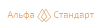

Request a call
Химические продукты, применяемые в быту — чистящие, моющие, дезинфицирующие средства, стиральные порошки — относятся к категории товаров бытовой химии. Их реализация в странах-субъектах ЕАЭС возможна только при условии успешного подтверждения качества и безопасности, итогом которого становится получение разрешительной документации: СГР (свидетельство государственной регистрации), декларации.
Определение схемы сертификации, сбор необходимых документов, их представление в сертифицирующий орган и прохождение лабораторных испытаний отнимают много времени и сил. Специалисты нашей компании обладают огромным опытом работы в сфере товарной сертификации и помогут вам получить необходимые документы в максимально короткие сроки, а также проконсультируют по всем возникающим в рамках этого процесса вопросам.
Сейчас соответствие химических товаров подтверждается тремя формами:
-СГР. Свидетельство государственной регистрации является обязательным для всех видов хим. продукции, выдается заявителю после внесения данных о ней в реестр Роспотребнадзора и предъявляется сотрудникам таможенной службы при ввозе товара на территорию стран-участников ЕАЭС;
-Декларация соответствия ГОСТ Р. Разрешает продажу определенных средств бытовой химии, внесенных в Единый перечень Таможенного союза;
-Добровольный сертификат. Оформляется на товары, не включенные в Единый перечень, по инициативе производителя или дистрибьютора. Повышает авторитет компании в глазах потребителей, увеличивает их доверие к выпускаемой продукции, дает возможность участвовать в госзакупках.
Имея на руках перечисленные документы заявитель может обратиться в сертифицирующий орган, сотрудники которого:
-Оценят полноту представленных материалов;
-Рассчитают стоимость оформления;
-При необходимости заверят документы или доработают в соответствии с требованиями нормативов;
-Осуществят забор образцов и вместе с документацией отправят их на экспертизу с последующим внесением ее результата в протокол;
-Получат экспертное заключение и на его основании получат Свидетельство государственной регистрации;
-Внесут номер документа в Единый Госреестр и передадут его заказчику.
Заявителем может быть производитель товара или дистрибьютор — юридическое лицо или ИП.
На настоящий момент нет технического регламента для химической продукции: документ находится в стадии разработки и должен вступить в силу в текущем году. Техрегламент объединит две существующие обязательные формы сертификации: декларацию и СГР.
С момента принятия регламента “О безопасности синтетических средств” ранее принятые разрешительные документы будут упразднены и потребуется оформление всех товаров в соответствии с новыми требованиями.
Декларирование хим. продуктов по ГОСТ Р. и ТР ТС имеет ряд отличий:
-Декларация таможенного союза на бытовую химию и синтетические моющие средства — один официальный документ, совместивший все функции двух предыдущих, то есть разрешающий одновременно и ввоз и ввод в обращение задекларированного товара;
-Проведение лабораторных испытаний по техрегламенту осуществляется с учетом определенных стандартов, в которых прописаны применяемые научные методы и правила;
-Декларация ТР ТС — бланк государственного образца, имеющий в левой верхней части знак ЕАС, то есть единый знак обращения, действующий на территории Таможенного союза;
Залог успешного и своевременного прохождения сертификации — ответственное отношение к сбору пакета необходимых документов.
Для товаров, выпускаемых на территории ТС:
-Грамотно оформленная заявка;
-Бланк с реквизитами компании и ее уставные документы;
-Описание товара — фото, электронный образец этикетки, технические требования производства, паспорта безопасности и качества;
-Сертификат ИСО (при наличии).
Для товаров, ввозимых на территорию ТС (в переводе на русский язык):
-Заявка;
-Описание продукта, включая фото и образец этикетки;
-ОГРН, ИНН, ЕГРЮЛ импортера;
-При наличии — тех. описание, паспорта безопасности, сертификат ИСО, договор на поставку.
Принятие техрегламента повлечет расширение списка декларируемых продуктов. В него войдут СМС (стиральные порошки, кондиционеры, средства для посуды и тд.) и составы для:
-Чистки твердых поверхностей;
-Полировки;
-Отбеливания и подсинивая белья;
-Антистатической обработки;
-Кожи, замши, нубука;
-Смягчения воды;
-Выведения пятен;
-Склеивания различных материалов;
-Окрашивания тканей, трикотажа, текстиля;
Чтобы получить возможность реализовать химический продукт на территории стран ТС, необходимо обратиться в аккредитованный сертификационный орган для получения разрешительной документации.
У нас вы можете заказать оформление ТР ТС на бытовую химию “под ключ”. Для этого:
-Подайте заявку на сайте или по телефону;
-Придите в офис компании в назначенное время для уточнения стоимости проекта, передачи документации (по запросу нашего представителя) и образцов продукции.
Далее наши специалисты выполнят оформление ТР ТС в соответствии с утвержденным алгоритмом, проконтролируют все этапы этого процесса, оповестят о его завершении и пригласят на встречу для получения документа.